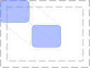

Module awful.placement
Algorithms used to place various drawables.
The functions provided by this module all follow the same arguments conventions. This allow:
- To use them in various other module as visitor objects
- Turn each function into an API with various common customization parameters.
- Re-use the same functions for the mouse, clients, screens and wiboxes
Compositing
It is possible to compose placement function using the + or * operator:
-- 'right' will be replaced by 'left' local f = (awful.placement.right + awful.placement.left) f(client.focus)
-- Simulate Windows 7 'edge snap' (also called aero snap) feature local axis = 'vertically' local f = awful.placement.scale + awful.placement.left + (axis and awful.placement['maximize_'..axis] or nil) local geo = f(client.focus, {honor_workarea=true, to_percent = 0.5})
Common arguments
pretend (boolean):
Do not apply the new geometry. This is useful if only the return values is necessary.
honor_workarea (boolean):
Take workarea into account when placing the drawable (default: false)
honor_padding (boolean):
Take the screen padding into account (see screen.padding)
tag (tag):
Use a tag geometry
margins (number or table):
A table with left, right, top, bottom keys or a number
parent (client, wibox, mouse or screen):
A parent drawable to use a base geometry
bounding_rect (table):
A bounding rectangle
attach (boolean):
When the parent geometry (like the screen) changes, re-apply the placement
function. This will add a detach_callback function to the drawable. Call
this to detach the function. This will be called automatically when a new
attached function is set.
offset (table or number):
The offset(s) to apply to the new geometry.
store_geometry (boolean):
Keep a single history of each type of placement. It can be restored using
awful.placement.restore by setting the right context argument.
When either the parent or the screen geometry change, call the placement function again.
update_workarea (boolean):
If attach is true, also update the screen workarea.
Info:
- Copyright: 2008 Julien Danjou, Emmanuel Lepage Vallee 2016
- Author: Emmanuel Lepage Vallee <[email protected]>,Julien Danjou <[email protected]>
Functions
| closest_corner ([d=client.focus[, args={}]]) | Move a drawable to the closest corner of the parent geometry (such as the screen). |
| no_offscreen (c[, args={}]) | Place the client so no part of it will be outside the screen (workarea). |
| no_overlap (c[, args={}]) | Place the client where there’s place available with minimum overlap. |
| under_mouse (d[, args={}]) | Place the client under the mouse. |
| next_to_mouse (d[, args={}]) | Place the client next to the mouse. |
| resize_to_mouse (d[, args={}]) | Resize the drawable to the cursor. |
| align (d[, args={}]) | Move the drawable (client or wibox) d to a screen position or side. |
| top_left (d[, args={}]) | Align a client to the top left of the parent area. |
| top_right (d[, args={}]) | Align a client to the top right of the parent area. |
| bottom_left (d[, args={}]) | Align a client to the bottom left of the parent area. |
| bottom_right (d[, args={}]) | Align a client to the bottom right of the parent area. |
| left (d[, args={}]) | Align a client to the left of the parent area. |
| right (d[, args={}]) | Align a client to the right of the parent area. |
| top (d[, args={}]) | Align a client to the top of the parent area. |
| bottom (d[, args={}]) | Align a client to the bottom of the parent area. |
| centered (d[, args={}]) | Align a client to the center of the parent area. |
| center_vertical (d[, args={}]) | Align a client to the vertical center of the parent area. |
| center_horizontal (d[, args={}]) | Align a client to the horizontal center left of the parent area. |
| stretch ([d=client.focus[, args={}]]) | Stretch a drawable in a specific direction. |
| stretch_left (d[, args={}]) | Stretch the drawable to the left of the parent area. |
| stretch_right (d[, args={}]) | Stretch the drawable to the right of the parent area. |
| stretch_up (d[, args={}]) | Stretch the drawable to the top of the parent area. |
| stretch_down (d[, args={}]) | Stretch the drawable to the bottom of the parent area. |
| maximize ([d=client.focus[, args={}]]) | Maximize a drawable horizontally, vertically or both. |
| maximize_vertically (d[, args={}]) | Vetically maximize the drawable in the parent area. |
| maximize_horizontally (d[, args={}]) | Horizontally maximize the drawable in the parent area. |
| scale ([d=client.focus[, args={}]]) | Scale the drawable by either a relative or absolute percent. |
| next_to (d, args) | Move a drawable to a relative position next to another one. |
| restore ([d=client.focus[, args={}]]) | Restore the geometry. |
Functions
Methods- closest_corner ([d=client.focus[, args={}]])
-
Move a drawable to the closest corner of the parent geometry (such as the screen).
Valid arguments include the common ones and:
- include_sides: Also include the left, right, top and bottom positions
Usage example output:
Closest corner: top_left- d drawable A drawable (like client, mouse or wibox) (default client.focus)
- args table The arguments (default {})
Returns:
Usage:
-- Move the mouse to the closest corner of the focused client awful.placement.closest_corner(mouse, {include_sides=true, parent=c}) -- It is possible to emulate the mouse API to get the closest corner of -- random area local _, corner = awful.placement.closest_corner( {coords=function() return {x = 100, y=100} end}, {include_sides = true, bounding_rect = {x=0, y=0, width=200, height=200}} ) print('Closest corner:', corner)
- no_offscreen (c[, args={}])
-
Place the client so no part of it will be outside the screen (workarea).
Usage example output:
Before: x=-30, y=-30, width=100, height=100 After: x=50, y=50, width=100, height=100- c client.object The client.
- args The arguments
- screen integer The screen. (default client's screen)
Returns:
-
table
The new client geometry.
Usage:
awful.placement.no_offscreen(c, {honor_workarea=true, margins=40}) - no_overlap (c[, args={}])
-
Place the client where there’s place available with minimum overlap.
- c The client.
- args table Other arguments (default {})
Returns:
-
table
The new geometry
Usage:
awful.placement.no_overlap(client.focus) local x,y = screen[4].geometry.x, screen[4].geometry.y
- under_mouse (d[, args={}])
-
Place the client under the mouse.

Returns:
-
table
The new geometry
Usage:
awful.placement.under_mouse(client.focus)
- next_to_mouse (d[, args={}])
-
Place the client next to the mouse.
It will place
cnext to the mouse pointer, trying the following positions in this order: right, left, above and below.Returns:
-
table
The new geometry
Usage:
awful.placement.next_to_mouse(client.focus)
- resize_to_mouse (d[, args={}])
-
Resize the drawable to the cursor.
Valid args:
- axis: The axis (vertical or horizontal). If none is specified, then the drawable will be resized on both axis.
Returns:
-
table
The new geometry
- align (d[, args={}])
-
Move the drawable (client or wibox)
dto a screen position or side.Supported args.positions are:
- top_left
- top_right
- bottom_left
- bottom_right
- left
- right
- top
- bottom
- centered
- center_vertical
- center_horizontal
Returns:
-
table
The new geometry
- top_left (d[, args={}])
-
Align a client to the top left of the parent area.

Returns:
-
table
The new geometry
Usage:
awful.placement.top_left(client.focus)
- top_right (d[, args={}])
-
Align a client to the top right of the parent area.
Returns:
-
table
The new geometry
Usage:
awful.placement.top_right(client.focus)
- bottom_left (d[, args={}])
-
Align a client to the bottom left of the parent area.
Returns:
-
table
The new geometry
Usage:
awful.placement.bottom_left(client.focus)
- bottom_right (d[, args={}])
-
Align a client to the bottom right of the parent area.
Returns:
-
table
The new geometry
Usage:
awful.placement.bottom_right(client.focus)
- left (d[, args={}])
-
Align a client to the left of the parent area.
Returns:
-
table
The new geometry
Usage:
awful.placement.left(client.focus)
- right (d[, args={}])
-
Align a client to the right of the parent area.
Returns:
-
table
The new geometry
Usage:
awful.placement.right(client.focus)
- top (d[, args={}])
-
Align a client to the top of the parent area.
Returns:
-
table
The new geometry
Usage:
awful.placement.top(client.focus) assert(c.x == screen[1].geometry.width/2-40/2-c.border_width)
- bottom (d[, args={}])
-
Align a client to the bottom of the parent area.
Returns:
-
table
The new geometry
Usage:
awful.placement.bottom(client.focus)
- centered (d[, args={}])
-
Align a client to the center of the parent area.
Returns:
-
table
The new geometry
Usage:
awful.placement.centered(client.focus)
- center_vertical (d[, args={}])
-
Align a client to the vertical center of the parent area.
Usage:
awful.placement.center_vertical(client.focus)
- center_horizontal (d[, args={}])
-
Align a client to the horizontal center left of the parent area.
Returns:
-
table
The new geometry
Usage:
awful.placement.center_horizontal(client.focus)
- stretch ([d=client.focus[, args={}]])
-
Stretch a drawable in a specific direction.
Valid args:
- direction: The stretch direction (left, right, up, down) or a table with multiple directions.

- d drawable A drawable (like client or wibox) (default client.focus)
- args table The arguments (default {})
Returns:
-
table
The new geometry
- stretch_left (d[, args={}])
-
Stretch the drawable to the left of the parent area.
Returns:
-
table
The new geometry
Usage:
placement.stretch_left(client.focus)
- stretch_right (d[, args={}])
-
Stretch the drawable to the right of the parent area.
Returns:
-
table
The new geometry
Usage:
placement.stretch_right(client.focus)
- stretch_up (d[, args={}])
-
Stretch the drawable to the top of the parent area.
Returns:
-
table
The new geometry
Usage:
placement.stretch_up(client.focus)
- stretch_down (d[, args={}])
-
Stretch the drawable to the bottom of the parent area.
Returns:
-
table
The new geometry
Usage:
placement.stretch_down(client.focus)
- maximize ([d=client.focus[, args={}]])
-
Maximize a drawable horizontally, vertically or both.
Valid args:
- axis:The axis (vertical or horizontal). If none is specified, then the drawable will be maximized on both axis.
- d drawable A drawable (like client or wibox) (default client.focus)
- args table The arguments (default {})
Returns:
-
table
The new geometry
- maximize_vertically (d[, args={}])
-
Vetically maximize the drawable in the parent area.
Usage:
placement.maximize_vertically(c)
- maximize_horizontally (d[, args={}])
-
Horizontally maximize the drawable in the parent area.
Usage:
placement.maximize_horizontally(c)
- scale ([d=client.focus[, args={}]])
-
Scale the drawable by either a relative or absolute percent.
Valid args:
to_percent : A number between 0 and 1. It represent a percent related to the parent geometry. by_percent : A number between 0 and 1. It represent a percent related to the current size. direction: Nothing or “left”, “right”, “up”, “down”.
- d drawable A drawable (like client or wibox) (default client.focus)
- args table The arguments (default {})
Returns:
-
table
The new geometry
- next_to (d, args)
-
Move a drawable to a relative position next to another one.
This placement function offers two additional settings to align the drawable alongside the parent geometry. The first one, the position, sets the side relative to the parent. The second one, the anchor, set the alignment within the side selected by the
preferred_positions. Both settings are tables of priorities. The first available slot will be used. If there isn’t enough space, then it will fallback to the next until it is possible to fit the drawable. This is meant to avoid going offscreen.The
args.preferred_positionslook like this:{"top", "right", "left", "bottom"}The
args.preferred_anchorsare:- “front”: The closest to the origin (0,0)
- “middle”: Centered aligned with the parent
- “back”: The opposite side compared to
front
In that case, if there is room on the top of the geometry, then it will have priority, followed by all the others, in order.
- d drawable A wibox or client
- args
Returns:
- table The new geometry
- string The choosen position (“left”, “right”, “top” or “bottom”)
- string The choosen anchor (“front”, “middle” or “back”)
Usage:
for _, pos in ipairs{'left', 'right', 'top', 'bottom'} do for _, anchor in ipairs{'front', 'middle', 'back'} do awful.placement.next_to( client.focus, { preferred_positions = pos, preferred_anchors = anchor, geometry = parent_client, } ) end end The
args.modeparameters allows to control from which next_to takes its source object from. The valid values are: * geometry: Next to this geometry,args.geometryhas to be set. * cursor: Next to the mouse. * cursor_inside * geometry_inside - restore ([d=client.focus[, args={}]])
-
Restore the geometry.
- d drawable A drawable (like client or wibox) (default client.focus)
- args table The arguments (default {})
Returns:
-
boolean
If the geometry was restored